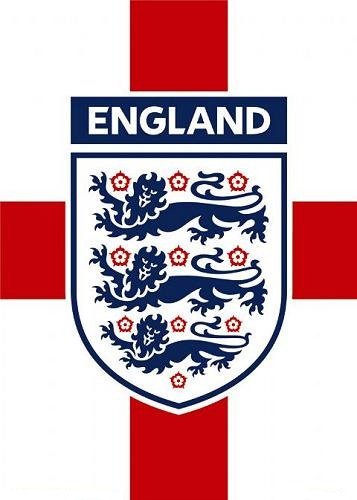

por Pedro Henrique B. N. Prado

O dia 14 de novembro de 2007 tem um significado especial para os ingleses. Não há algum feriado nacional ou uma data importante para a corte. Foi a partir daí que o English Team, então combalido e ridicularizado sob comando de Steve McClaren, começou a se reerguer. Muito graças à chegada do técnico Fabio Capello. O italiano foi o principal responsável para desviar o foco da não classificação para a Eurocopa do ano seguinte, como também formou um time competitivo e que chega ao Mundial bem cotado.
Além do treinador, que já anunciou aposentadoria após a Euro-2012, Rooney também teve sua parcela de méritos. Ao lado de Gerrard e Lampard, o atacante se firmou entre os melhores do mundo na sua posição e pode levar a Inglaterra ao menos a uma semifinal de Copa, o que não ocorre desde 1990. A geração também conta com talento no setor defensivo, com a dupla de zaga Terry e Ferdinand. A desconfiança está dentro das áreas: Foster ainda não se firmou no gol do Manchester United e Heskey é um centroavante de altos e baixos.
O convívio com a lesões, refletido no amistoso contra o Brasil, também pode ser um diferencial negativo. Embora nem a longa campanha nas eliminatórias tenha revelado essa fraqueza, quando terminou o Grupo 6 com nove vitórias e apenas uma derrota.